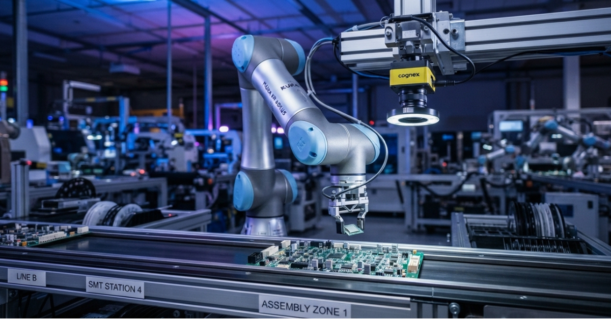
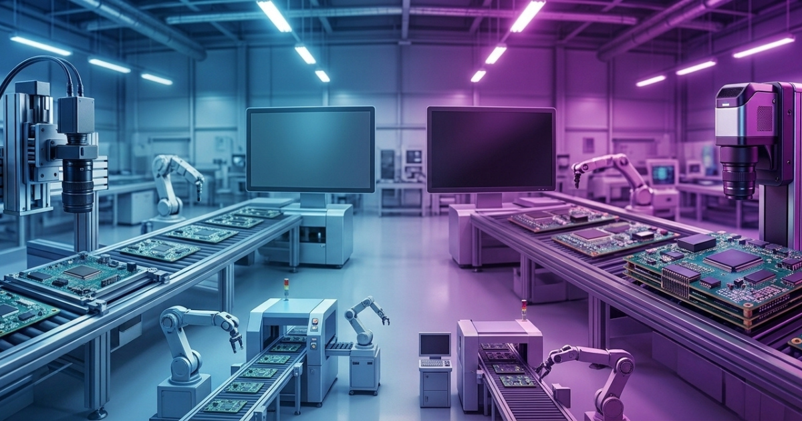
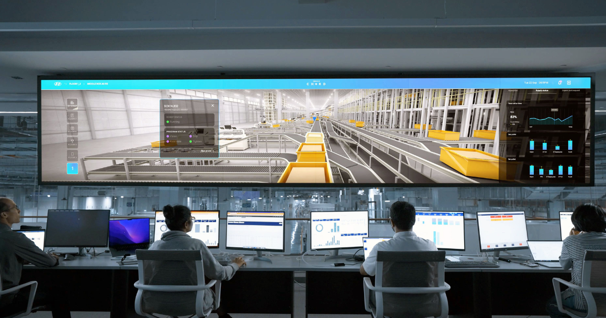
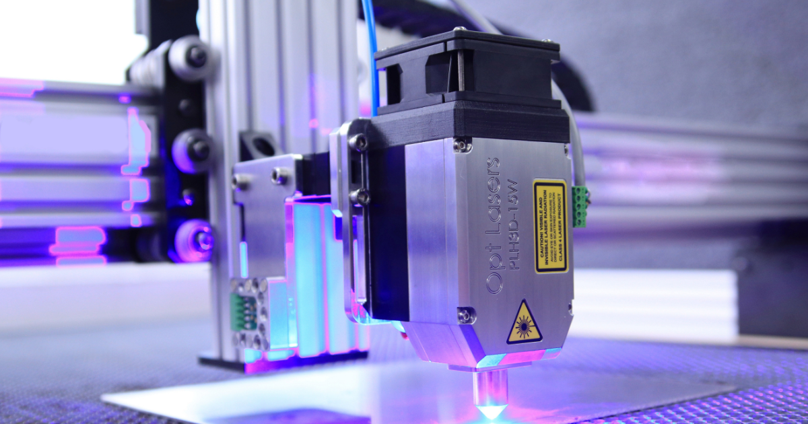

技術文章視覺引導機械手臂（VGR）：讓機器人「看得見」再動手
2026-09-14
視覺引導機械手臂（VGR）結合機器視覺與機械手臂，實現精準取放、組裝與檢測。本文解析 VGR 的運作原理、應用場景與導入關鍵。

技術文章AI 機器視覺 vs 傳統 AOI：差在哪裡，怎麼選？
2026-09-13
傳統 AOI 與 AI 機器視覺各有優勢。本文從原理、彈性、誤判率到導入成本，完整比較兩者差異，幫你判斷產線該用哪一種，或如何搭配。

產業趨勢工業 4.0 與機器視覺：智慧製造的核心角色
2026-09-12
機器視覺是工業 4.0 智慧製造的關鍵一環。本文解析視覺系統如何連結資料、AI 與自動化，從被動檢測走向主動優化，成為智慧工廠的眼睛。

產業趨勢AI 與機器視覺的未來：Edge AI、3D 視覺與深度學習 OCR 的最新發展
2026-09-11
從 Edge AI 即時檢測、3D 視覺量測到深度學習 OCR，本文整理機器視覺三大技術趨勢與市場動向，解析它們如何改變製造業的品質檢測與自動化。